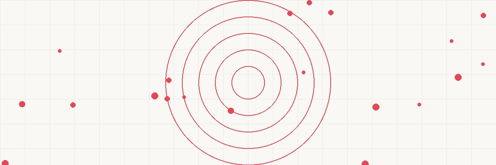

CAPITAL GAIN EVENT QUALIFIED OZ TAX BENEFITS
(Stock sale, etc.) FUND INVESTMENT ─────────────────
───────────────── ═══════════════════ • DEFER original gain
• Sold stock/biz ──╲ ╱── until 2026 (or sale)
$500K gain ───╲┌──────────┐╱─── • ELIMINATE tax on
• 180 days to ────╳│ QOZ FUND │╳──── NEW appreciation
invest in QOF ───╱└──────────┘╲─── if held 10+ years
• Invest the GAIN ╱ ╲ • Invest in distressed
(not proceeds) communities
INVESTMENT: REQUIREMENTS: ENDGAME:
───────────────── ═══════════════════ ─────────────────
• Real estate dev • Fund must invest • Hold 10 years
• Business startup 90%+ in OZ property • Sell OZ investment
• Operating biz • Must be "new" • ALL appreciation
in the zone investment/improve = $0 tax
• 180-day deadline • Only pay on
original deferred gain
────────────────────────────────────────────────
THE MATH:
$500K gain invested in OZ fund → grows to $1.5M in 12 years
Tax on $1M appreciation: $0 (held 10+ years)
Tax on original $500K gain: deferred, paid 2026 (~$119K)
Without OZ: $500K × 23.8% = $119K now + $238K on growth later
Total tax saved: ~$238,000
FADE IN: A sleek private investment office. KATHRYN REEVES (45, sold her tech startup, sitting on $2M in capital gains) faces her advisor MARCUS HAMILTON (50s, tax attorney, specializes in alternative investments). KATHRYN Marcus, I sold my company six weeks ago. My gain is $2 million. My CPA says I owe $476,000 in taxes by April. Is there anything I can do? MARCUS You have 180 days from the date of sale to invest that gain — or a portion of it — into a Qualified Opportunity Zone Fund. If you do, you defer the tax on the original gain AND potentially eliminate all tax on the new investment's appreciation forever. KATHRYN Forever? MARCUS If you hold the Opportunity Zone investment for at least ten years, any appreciation on that investment — no matter how large — is tax-free. The basis steps up to fair market value. The gain simply vanishes from the tax system. KATHRYN (leaning forward) Tell me everything.
MARCUS Congress created Opportunity Zones in the Tax Cuts and Jobs Act of 2017. The idea: incentivize investment in economically distressed communities by offering extraordinary tax benefits to investors. He pulls up a map showing designated census tracts. MARCUS (CONT'D) There are approximately 8,764 designated Opportunity Zones across all 50 states. They're census tracts nominated by governors and certified by Treasury. Many are in urban areas, but some are suburban or rural. KATHRYN What can I invest in? MARCUS You invest through a Qualified Opportunity Fund — a QOF. That's a corporation or partnership organized for the purpose of investing in Opportunity Zone property. The fund must hold at least 90% of its assets in qualified OZ property. He lists options: MARCUS (CONT'D) The fund can invest in: — Real estate: new construction or substantial improvement of existing property — Operating businesses: startups or expansions in the zone — Both through direct ownership or through partnership/LLC interests The most common: ground-up real estate development. Apartment buildings, mixed-use commercial, hotels, industrial facilities — all in designated zones. KATHRYN Can I start my own fund? MARCUS Absolutely. A QOF can have a single investor — you. You form an LLC, elect QOF status by filing Form 8996 with your tax return, and invest the capital gains into qualifying zone property. You don't have to join someone else's fund.
MARCUS Benefit number one: deferral. When you invest a capital gain into a QOF, you defer recognition of that gain. The tax isn't due until the EARLIER of: December 31, 2026, or the date you sell the QOF investment. KATHRYN December 31, 2026? That's coming up. MARCUS Yes — and this is important. The original deferral deadline was pushed back over time. For investments made now, the deferred gain will be recognized on your 2026 tax return regardless. But you'll have had the use of that tax money for the deferral period — essentially an interest-free loan from the Treasury. She calculates: KATHRYN So I invest $2M now instead of paying $476K in tax. I keep $476K invested for two more years earning returns. Even at 8%, that's $38,000 in additional returns on money I'd otherwise have sent to the IRS. MARCUS Correct. And that's just the deferral benefit. The real power is benefit number two. KATHRYN Which is? MARCUS Elimination of tax on the appreciation.
MARCUS Benefit number two — and this is the big one: if you hold the QOF investment for at least ten years, your basis in the QOF interest steps up to fair market value at the time you sell. That means ALL appreciation — everything the investment gained above your original invested amount — is tax-free. He writes the scenario: MARCUS (CONT'D) You invest $2M into a QOF that develops apartment buildings in an Opportunity Zone. Over 12 years, the properties appreciate and generate value. The investment is now worth $5M. Without OZ: You'd owe 23.8% on $3M of appreciation = $714,000. With OZ (10+ year hold): Tax on $3M appreciation = $0. Basis steps up to $5M. KATHRYN Zero tax on three million dollars of gain. MARCUS Zero. Section 1400Z-2(c) says "the basis of such investment shall be equal to the fair market value of the investment" at the time of sale, if held at least 10 years. The gain simply doesn't exist for tax purposes. KATHRYN That's... extraordinary. MARCUS It's the single most generous tax incentive Congress has created for capital gains since the Roth IRA. And unlike the Roth, there's no contribution limit on how much you can invest.
MARCUS The clock is ticking. You have 180 days from the date of your gain to invest in a QOF. When exactly did you close the sale? KATHRYN Six weeks ago. So I have about 138 days left. MARCUS Plenty of time if we move now. A few clarifications on the 180-day rule: it starts from the date the gain would be recognized. For a stock sale, that's the settlement date. For a business sale, it's typically the closing date. He pauses. MARCUS (CONT'D) Also important: you only need to invest the GAIN amount, not the entire proceeds. You sold your company for $3.5M with a basis of $1.5M. Your gain is $2M. You only need to invest $2M in the QOF. The other $1.5M is your basis return — no tax on that anyway. KATHRYN Can I invest part of the gain? MARCUS Yes. There's no requirement to invest 100% of the gain. If you invest $1M of the $2M gain, you defer tax on $1M and pay tax currently on the other $1M. Partial investment is perfectly acceptable. KATHRYN What if I can't find a qualifying investment in 180 days? MARCUS Then the uninvested gain is recognized normally and you pay the tax. This is why many investors use third-party QOF funds that are already capitalized and deploying — you write a check, they invest it. No need to source and develop your own deals from scratch.
MARCUS One rule that trips people up: if the QOF purchases an existing building in the zone, it must "substantially improve" it within 30 months. That means spending at least as much on improvements as the original purchase price of the building — not the land. KATHRYN So you can't just buy an existing building and sit on it? MARCUS Correct. The law requires new investment activity. You can either: A) Build new construction on purchased or leased land, or B) Buy an existing building and invest at least the building's purchase price in improvements within 30 months. He gives an example: MARCUS (CONT'D) Say you buy a property for $1M — $400K land, $600K building. You must invest at least $600K in improvements within 30 months. If you're doing a gut renovation or major expansion, you'll hit that naturally. If you're doing light cosmetic work, you won't qualify. KATHRYN What about ground-up development on vacant land? MARCUS That automatically satisfies the requirement — you're building new, not improving existing. Ground-up is the cleanest path. And in most Opportunity Zones, there's plenty of available land or teardown properties waiting for development. KATHRYN The zones near my old startup have a lot of new apartment construction happening. MARCUS That's not a coincidence. Developers have been flocking to OZ-designated tracts since 2018. The tax benefits make projects economically viable that wouldn't otherwise pencil out.
MARCUS Here's where it gets elegant. The Opportunity Zone benefit stacks with other strategies. He draws a flowchart: MARCUS (CONT'D) Strategy one: 1031 into OZ. You can't directly 1031 into an OZ fund (they're different mechanisms). But you CAN sell a property, recognize the gain, invest that gain into a QOF, and defer. If the 1031 deadline would be impossible to meet but the OZ 180-day window works — use the OZ path instead. Strategy two: Cost segregation on OZ property. If your QOF builds a $5M apartment complex in the zone, you can still do a cost seg study and take accelerated depreciation. The OZ benefit applies to the eventual sale; cost seg gives you benefits during the hold period. KATHRYN Both at the same time? MARCUS Both at the same time. You're deferring the original gain via OZ, taking depreciation deductions on the new property during the hold, and then eliminating tax on all appreciation after 10 years. It's layered tax planning. Strategy three: installment sales into OZ. If you sold your business with an installment note, the 180-day clock starts when each installment payment creates gain recognition. You can invest each payment's gain into the QOF as it comes in. KATHRYN My sale had a $500K earn-out payment due next year. MARCUS When that earn-out creates gain, you'll have 180 days from that recognition date to invest it in the QOF. Each gain event gets its own clock.
KATHRYN What are the risks? MARCUS Let me be transparent. OZ investing has real risks beyond typical real estate or business risk. He counts: MARCUS (CONT'D) One: illiquidity. You need to hold for 10 years to get the appreciation exclusion. If you need to sell at year 7, you lose the biggest benefit. Make sure this is money you truly don't need for a decade. Two: fund quality. Many QOF funds were launched by developers with little track record, riding the OZ hype. Due diligence on the fund operator is critical. Ask for audited financials, prior development experience, and references. Three: zone quality. Not all Opportunity Zones are equal. Some are gentrifying rapidly — great for returns. Others are stagnant — designated as distressed because they ARE distressed, and investment alone won't change that. Four: legislative risk. Congress could modify or repeal the OZ benefits. Existing investments are likely grandfathered, but no guarantee. Five: compliance complexity. The QOF must maintain 90% of assets in qualified OZ property. The 30-month improvement window. The annual Form 8996 testing. Miss any requirement and the tax benefits disappear. KATHRYN So this isn't passive investing. MARCUS It can be passive if you invest in a well-managed third-party fund. But you need to vet that fund thoroughly. This isn't "set it and forget it" like an index fund.
MARCUS Here's what I recommend for your $2M gain: He draws a pie chart: MARCUS (CONT'D) $1.2M → Third-party QOF specializing in multifamily development. I have three vetted operators with strong track records in OZ developments. Diversifies your risk across multiple properties and zones. $500K → Self-directed QOF. You form your own fund and invest in a specific project you identify. More control, more work, more concentrated risk. $300K → Reserve. Don't invest in the QOF. Pay tax on this portion now. Keep it liquid for the tax bill in 2026 on the deferred gains and for personal use. KATHRYN Why not invest all $2M? MARCUS Because in 2026, you'll owe tax on the deferred gains — roughly $338K (at 23.8% on $1.7M invested). You need liquid assets to pay that bill. Don't put yourself in a position where you own illiquid OZ investments and owe a large tax bill with no cash to pay it. KATHRYN Smart. And the timeline? MARCUS We form your self-directed QOF this week. You subscribe to the third-party fund within 30 days. Both well within your 180-day window. By year-end, you'll have Form 8997 filed reporting the deferral election, and the money will be deployed into qualifying OZ property.
Kathryn stands, energized rather than stressed. KATHRYN Six weeks ago, I was dreading a $476K tax bill. Now I'm investing that money into communities that need it and potentially eliminating tax on millions in future appreciation. MARCUS (nodding) That's the genius of the OZ program. Congress aligned incentives: investors get extraordinary tax benefits, distressed communities get capital investment, and the economy gets development activity. Everyone benefits. He walks her to the door. MARCUS (CONT'D) IRC Section 1400Z-2 — Qualified Opportunity Zones. Defer capital gains by investing in designated communities. Hold for ten years and all appreciation is tax-free. No dollar limit. No income restriction. Available to anyone with a realized capital gain and the discipline to invest for the long term. KATHRYN What's the total tax savings if everything goes right? MARCUS You invest $1.7M. It grows to $5M over 12 years. Tax on $3.3M of appreciation: zero. That's $785K in tax you never pay. Minus the $405K you pay on the deferred gain in 2026, your NET tax savings is approximately $380K compared to just paying capital gains tax today and investing in a taxable account. KATHRYN (smiling) Three hundred eighty thousand dollars. For investing in apartment buildings. MARCUS For investing in apartment buildings in communities that need them. The tax code rewards building things. It punishes hoarding. You're choosing the path the code is designed to encourage. She shakes his hand and exits, already googling Opportunity Zones near her old startup's office. FADE OUT. — END —